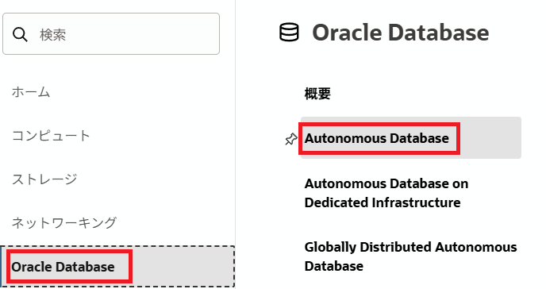
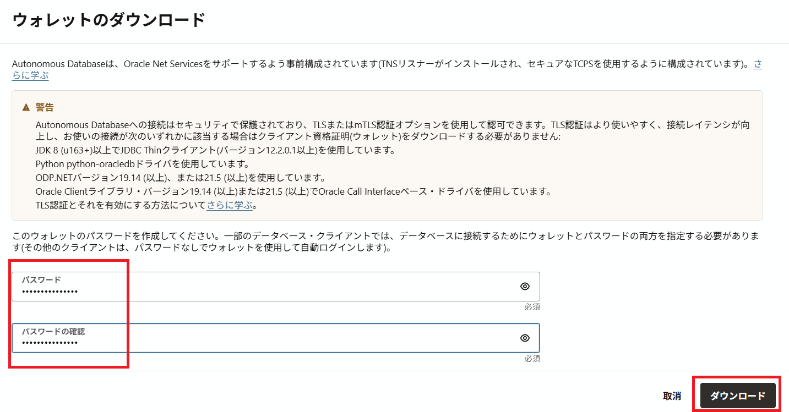

このセッションでは、Oracle FunctionsからORDS(Oracle REST Data Services)という仕組みを利用してATPに接続し、データを取得する方法について説明します。 ORDSはデフォルトでATPに組み込まれている仕組みです。
ORDSについて
ATPはORDSを利用してRESTfulインターフェースでのアクセスを行うことができます。
ORDS(Oracle REST Data Services)の詳細についてはAutonomous Databaseを使用したOracle REST Data Servicesの開発をご確認ください。
このハンズオンが完了すると、以下のようなコンテンンツが出来上がります。

条件
- クラウド環境
- 有効なOracle Cloudアカウントがあること
- 事前環境構築
- Fn Projectハンズオンが完了していること
- Oracle Functionsハンズオンが完了していること
- ローカル端末にSQL Developerがインストールされていること
- ダウンロードはこちらから
1.事前準備
ここでは、ATPのプロビジョニングとORDSの設定を行います。
1-1.ATPのプロビジョニング
OCIコンソールのハンバーガーメニューから[データベース]で、[Autonomous Transaction Processing]をクリックします。

Autonomous Databaseの作成画面で、使用するコンパートメントを選択して、「Autonomous Databaseの作成」をクリックします。
以下項目を入力して、「Autonomous Databaseの作成」をクリックします。
- コンパートメント：使用するコンパートメントを選択。
- 表示名：表示名を入力。今回は、
Workshop ATP。 - データベース名：今回は、
WORKSHOPATP。 - ワークロード・タイプの選択：トランザクション処理
- デプロイメント・タイプ：共有インフラストラクチャ
- データベース・バージョンの選択：
19c - OCPU数：
1 - ストレージ(TB)：
1 - 自動スケーリング：チェックをオフ。
- パスワード：パスワードを入力。
- パスワードの確認：再度パスワードを入力。
- ネットワーク・アクセスの選択：すべての場所からのセキュア・アクセス
- ライセンス・タイプの選択：ライセンス込みを選択。
しばらくすると、「利用可能」のステータスになります。
次に、Autonomous Databaseの詳細の画面で、「DB接続」をクリックします。
「ウォレットのダウンロード」をクリックします。
（セキュリティルールに準拠する任意の）ウォレットのパスワードを入力して、「ダウンロード」をクリックします。後でローカルのOracle SQL Developerで接続するときに使用します。

これで、ATPのプロビジョニングは完了です。
2-2.ORDSサービスのベースURLの取得
Autonomous Databaseの詳細の画面で、「サービス・コンソール」をクリックします。
「開発」をクリックします。

「RESTfulサービスとSODA」の枠にある「URLのコピー」をクリックして、コピーされたURLをメモ帳に書き留めてください。
これはORDSサービスのベースURL(ords_base_url)です。
この値は後続の手順で使用するので、テキストエディタなどに保存しておきます。
2-3.ORDSサービスの有効化
Autonomous Databaseの詳細の画面で、「サービス・コンソール」をクリックします。
「開発」をクリックします。
「データベース・アクション」をクリックします。
ユーザー名とパスワードを入力して、「ログイン」をクリックします。
ユーザ名はadmin、パスワードは1-1.ATPのプロビジョニングで設定したパスワードです。
[開発]メニューの[SQL]をクリックします。

以下のコマンドを入力して、「スクリプトの実行」(またはF5)をクリックして、新しいユーザーを作成します。
CREATE USER usersvc IDENTIFIED BY [PASSWORD];
今回は、
CREATE USER usersvc IDENTIFIED BY PasswOrd__8080;
とします。
ユーザーusersvcに対して、必要な権限を付与します。
GRANT "CONNECT" TO usersvc;
GRANT "RESOURCE" TO usersvc;
GRANT UNLIMITED TABLESPACE TO usersvc;
ローカルのOracle SQL Developerを開いて、ダウンロードしたWalletファイルを使用して、作成されたユーザーusersvcで接続します。

検証用のテーブルusersを作成します。
CREATE TABLE users (
"ID" VARCHAR2(32 BYTE) DEFAULT ON NULL sys_guid(),
"FIRST_NAME" VARCHAR2(50 BYTE) COLLATE "USING_NLS_COMP"
NOT NULL ENABLE,
"LAST_NAME" VARCHAR2(50 BYTE) COLLATE "USING_NLS_COMP"
NOT NULL ENABLE,
"USERNAME" VARCHAR2(50 BYTE) COLLATE "USING_NLS_COMP"
NOT NULL ENABLE,
"CREATED_ON" TIMESTAMP(6) DEFAULT ON NULL current_timestamp,
CONSTRAINT "USER_PK" PRIMARY KEY ( "ID" )
);
サンプルデータを登録します。
INSERT INTO users VALUES (
'8C561D58E856DD25E0532010000AF462',
'todd',
'sharp',
'tsharp',
current_timestamp
);
INSERT INTO users VALUES (
'8C561D58E858DD25E0532010000AF462',
'jeff',
'smith',
'thatjeff',
current_timestamp
);
COMMIT;
ここからは、ORDSに関する設定を行っていきます。
作業するスキーマに対してRESTアクセスを有効にします。
BEGIN
ords.enable_schema(
p_enabled => true,
p_schema => 'USERSVC',
p_url_mapping_type => 'BASE_PATH',
p_url_mapping_pattern => 'usersvc',
p_auto_rest_auth => true
);
COMMIT;
END;
呼び出しの認証トークンを生成できるように、必要な権限を作成します。
今回はRoleにSQL Developerを利用します。
DECLARE
l_roles owa.vc_arr;
l_modules owa.vc_arr;
l_patterns owa.vc_arr;
BEGIN
l_roles(1) := 'SQL Developer';
l_patterns(1) := '/users/*';
ords.define_privilege(
p_privilege_name => 'rest_privilege',
p_roles => l_roles,
p_patterns => l_patterns,
p_modules => l_modules,
p_label => '',
p_description => '',
p_comments => NULL
);
COMMIT;
END;
権限に関連付けられたOAuthクライアントを作成します。
BEGIN
oauth.create_client(
p_name => '[Descriptive Name For Client]',
p_grant_type => 'client_credentials',
p_owner => '[Owner Name]',
p_description => '[Client Description]',
p_support_email => '[Email Address]',
p_privilege_names => 'rest_privilege'
);
COMMIT;
END;
今回は、
BEGIN
oauth.create_client(
p_name => 'Rest Client',
p_grant_type => 'client_credentials',
p_owner => 'USERSVC',
p_description => 'Rest Client',
p_support_email => 'oracle@oracle.com',
p_privilege_names => 'rest_privilege'
);
COMMIT;
END;
とします。
クライアントアプリケーション用にロールを作成し、権限を付与します。
今回はRoleにSQL Developerを利用します。
BEGIN
OAUTH.grant_client_role(
p_client_name => 'Rest Client',
p_role_name => 'SQL Developer'
);
COMMIT;
END;
これで、次のものを取得できます：client_id client_secret
SELECT id, name, client_id, client_secret
FROM user_ords_clients;
client_idおよびclient_secretは、REST呼び出し用の認証トークンを生成するために使用します。
これらの値については、後続の手順で使用するので、テキストエディタなどに保存しておいてください。
次にテーブルへのORDSアクセスを有効にします。
BEGIN
ords.enable_object(
p_enabled => true,
p_schema => 'USERSVC',
p_object => 'USERS',
p_object_type => 'TABLE',
p_object_alias => 'users',
p_auto_rest_auth => false
);
COMMIT;
END;
今回は、以下のエンドポイントを作成して、usernameでユーザ情報を取得するよう定義します。
BEGIN
ords.define_service(
p_module_name => 'users',
p_base_path => 'users/',
p_pattern => 'user/:username',
p_method => 'GET',
p_source_type => ords.source_type_collection_item,
p_source => 'SELECT id, username, first_name, last_name, created_on FROM users WHERE username = :username OFFSET 0 ROWS FETCH NEXT 1 ROWS ONLY');
COMMIT;
END;
これで、ORDSサービスの設定は完了です。
3.Oracle Functionsの作成
ここでは、Oracle Functionsの作成とデプロイを行います。
OCIコンソールのハンバーガーメニューをクリックして、「開発者サービス」に移動して、「ファンクション」をクリックします。
Oracle Functionsに使用する予定のリージョンを選択します（Fn Project CLIコンテキストで指定されたDockerレジストリと同じリージョンを推奨します）。
Fn Project CLIコンテキストで指定されたコンパートメントを選択します。
「アプリケーションの作成」をクリックして、次を指定して、「作成」をクリックします。
- 名前：このアプリケーションに最初のFunctionをデプロイし、Functionを呼び出すときにこのアプリケーションを指定。今回は、
fn-connect-to-atp - VCN：Functionを実行するVCN。今回は、Oracle Functionsハンズオンで作成したVCNを指定。
- サブネット：Functionを実行するサブネット。今回は、Oracle Functionsハンズオンで作成したVCNのパブリック・サブネットを指定。
Oracle Functionsハンズオンで利用したCloud Shellにログインします。
デプロイ前にFunctionsを実行するために環境変数をいくつか設定します。
fn config app fn-connect-to-atp client_id [client_id]
client_id：クライアントID。2-3で取得した値を使用します
fn config app fn-connect-to-atp client_secret [client_secret]
client_secret：クライアントシークレット。2-3.ORDSサービスの有効化で取得した値を使用します
fn config app fn-connect-to-atp ords_base_url [ords_base_url][p_url_mapping_pattern]
ords_base_url：ORDSサービスのベースURL。2-3.ORDSサービスの有効化で取得した値を使用しますp_url_mapping_pattern：今回は、usersvc
機密情報を含む環境変数について
機密情報を含む構成変数は、常に暗号化する必要があります。今回はシンプルな手順にするために特に暗号化は実施しませんが、実際に使用する場合は、キー管理を使用する方法を確認してください。
ワークショップ用のコンテンツをcloneし、ディレクトリに移動します。
git clone https://github.com/oracle-japan/connect-to-atp-with-functions.git
cd connect-to-atp-with-functions
以下のコマンドを実行して、fn-connect-to-atpというFunctionをデプロイします。
fn -v deploy --app fn-connect-to-atp
これで、Function作成とデプロイは完了です。
4.ATPへのアクセス確認
ここでは、デプロイしたFunctionsを利用してATPへのアクセス確認を行います。
今回は、Functionsにデータ検索条件としてユーザー名を渡して実行します。
echo -n "tsharp" | fn invoke fn-connect-to-atp fn-connect-to-atp
以下のような出力を得られます。
{"id":"8C561D58E856DD25E0532010000AF462","username":"tsharp","firstName":"todd","lastName":"sharp","createdOn":1586772847781}
これで、ORDSを利用してATPへのアクセスを行うことができました！
お疲れ様でした！